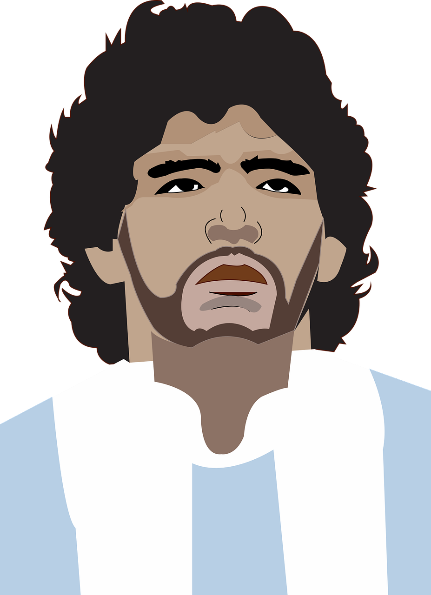
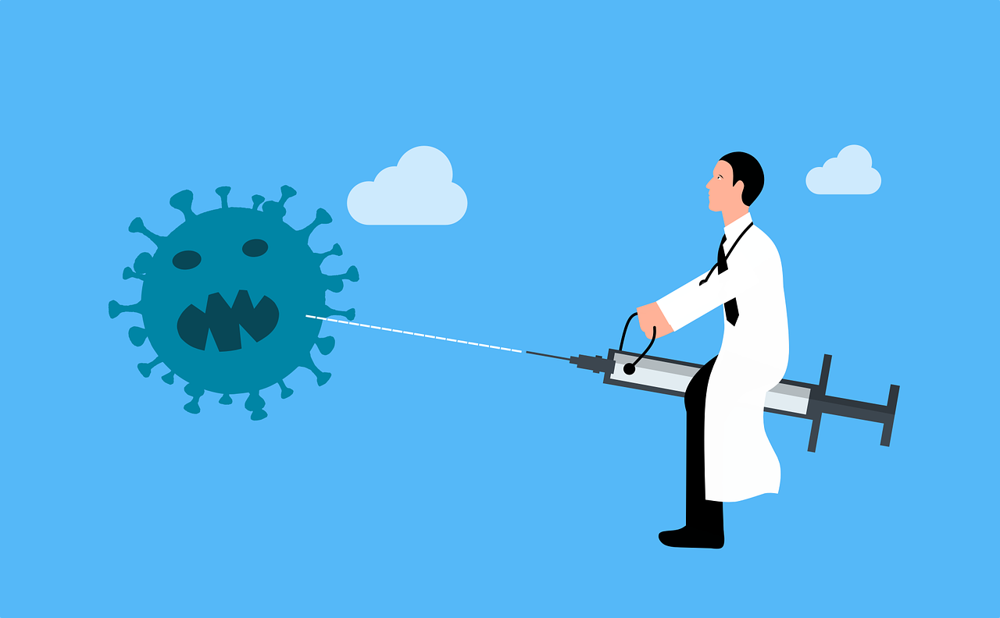

The last dribbling of Maradona
Diego Armando Maradona, the god of football, passed away from hearth failure. El pibe de oro was sixty years old. Maradona won FIFA World Cup with Argentina in 1986 and lost the final at next World Cup Italia 90. Napoli Football Club, the italian team he was captain of, named the San Paolo stadium in his honour. He will always be
admired across generations.

EU starts Covid-19 mass vaccination
After EU's medicine regulator approved the BioNTech/Pfizer vaccine, the vaccination started throughout Europe. “Today, we start turning the page on a difficult year,” Ursula von der Leyen, the European Commission president wrote on Twitter. “The #COVID19 vaccine has been delivered to all EU countries.”. Older Europeans and healthcare workers are in the priority queue of the campain to inoculate more than 450 million people across the European Union.
The European Union’s member states made a show of solidarity by waiting for the bloc’s regulatory board to approve the vaccine before beginning coordinated national campaigns. But how those will play out in individual countries is likely to be disparate.
